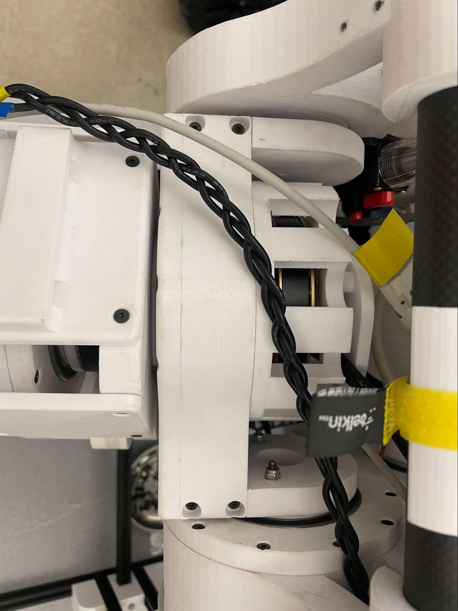

With the top plate removed, you have access to the electronics inside Sparky. Carefully disconnect the encoder cables from the ODESCs as needed. Do not pull on the ODESCs or cables — excessive force can damage the connectors.

Access to electronics (encoder cables highlighted).
Remove the sixteen screws that hold the leg to the robot. The views below show screw locations:
Reverse the steps above to reattach the leg. Hand-tighten fasteners initially and torque to spec if required.
Note
Be cautious when reconnecting encoder cables and routing wires. Verify all connections before powering the robot.
Warning
Do not yank on the ODESC or wires. Damaging the encoder connectors may require repairs or encoder reinitialization.
Additonally, be careful not to damage the encoder plate, as it can change offset values and require recalibration.